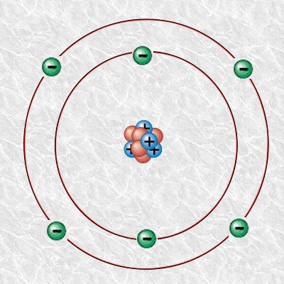
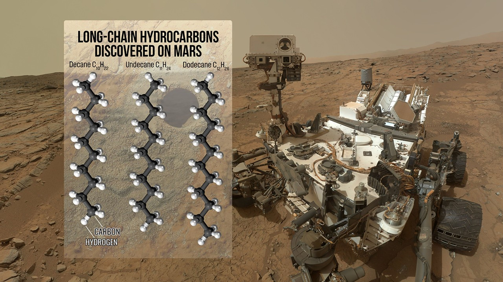
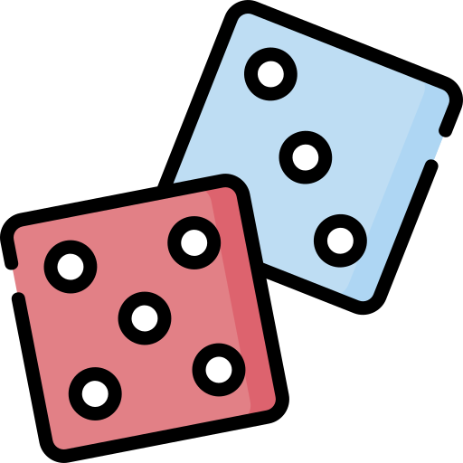

Enlaces covalente
Ya hemos visto que el carbono tiene 4 electrones en la capa de valencia y que, por tanto, es inestable. Este elemento forma enlaces covalentes. ¿Recuerdas qué es un enlace covalente? ¡Veamos!

¡Inténtalo!
Selecciona la respuesta correcta:
Tipos de enlace
El carbono es un no metal que puede formar hasta 4 enlaces covalentes para completar el octeto. Puede enlazarse con otros carbonos o con otros elementos químicos, ya sean metales, no metales o semimetales.
Para que lo veas de una forma más sencilla:
- Imagina que el carbono tiene posibilidad de 4 enlaces, es decir, como cuatro conectores. Puede realizar cuatro enlaces simples
- Si uno de esos enlaces lo hace con "dos conectores" se llama enlace doble
- Si se enlaza con "tres conectores" se llama enlace triple


Cadenas de carbono
Cuando los carbonos se enlazan entre sí pueden formar largas cadenas. Generalmente, en estos enlaces, participa el hidrógeno y se forman las llamadas cadenas hidrocarbonadas. La longitud de la cadena puede ser considerable e incluso unirse los extremos para formar cadenas cíclicas.
En función del número de carbonos que tenga la que será la cadena principal, utilizaremos un prefijo diferente para nombrarla, tal y como puedes ver en la siguiente tabla:
| Número de átomos de carbono en la cadena | Prefijo |
| 1 | Met- |
| 2 | Et- |
| 3 | Prop- |
| 4 | But- |
| 5 | Pent- |
| 6 | Hex- |
| 7 | Hept- |
| 8 | Oct- |
| 9 | Non- |
| 10 | Dec- |
| 11 | Undec- |
| 12 | Dodec- |
| 13 | Tridec- |
| 14 | Tetradec- |

Contando carbonos
Para esta actividad necesitaremos:
- Grupos de cinco
- Dos dados para cada grupo
- Un reloj de arena o cronómetro
- Dado especial (modalidad dos o tres)

Instrucciones del modo 1:
- Tras organizar los equipos se sortea quién comienza.
- Una persona del equipo inicial tendrá un minuto para lanzar los dados y escribir la cadena de carbonos con el número de carbonos que le indiquen los dados. Sus compañeros/as tendrán que acertar el prefijo correspondiente, ganando un punto si lo consiguen. Esta acción se repetirá hasta que termine el tiempo, pasando al equipo siguiente en el sentido de las agujas del reloj.
- Si un equipo realiza una cadena de más de diez carbonos y acierta el prefijo obtiene dos puntos en vez de uno.
Instrucciones del modo 2:
- Añade el dado de la profesora donde las caras indican si hay que añadir enlaces dobles o triples y cuantos.
Instrucciones del modo 3:
- Además de crear la cadena, introduce los hidrógenos para completar las cadenas hidrocarbonadas.
¡Juguemos!
Si quieres practicar en casa, puedes hacerlo con unos dados y un reloj tú mismo/a o incluso con unos dados virtuales.